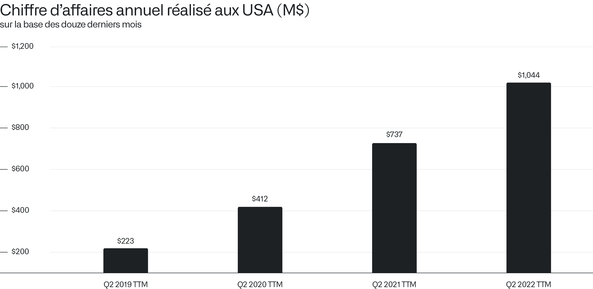
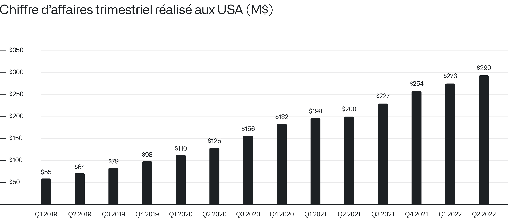
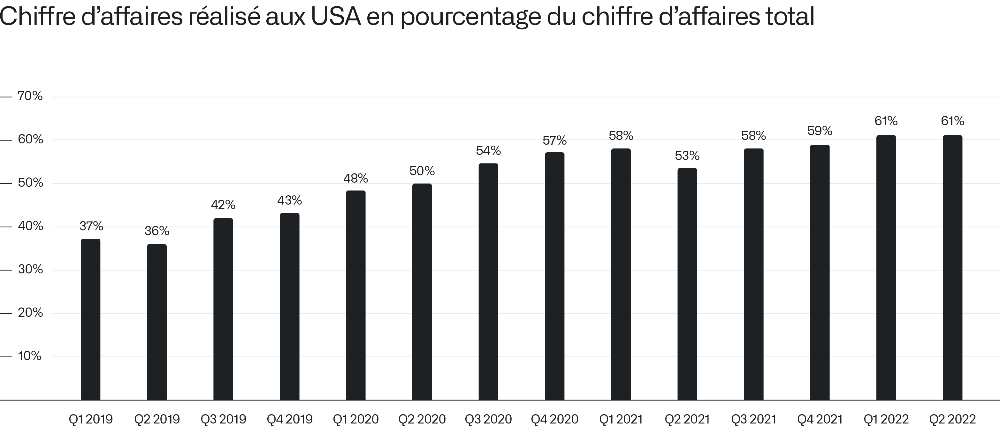
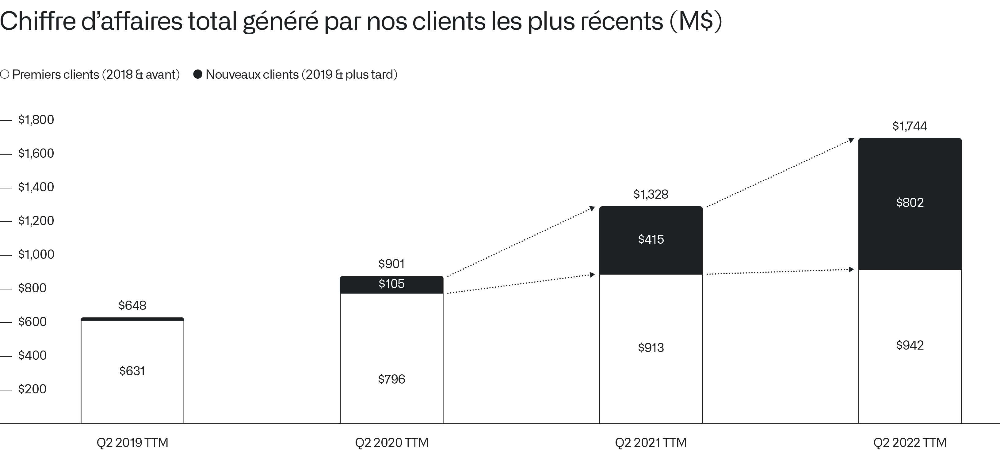
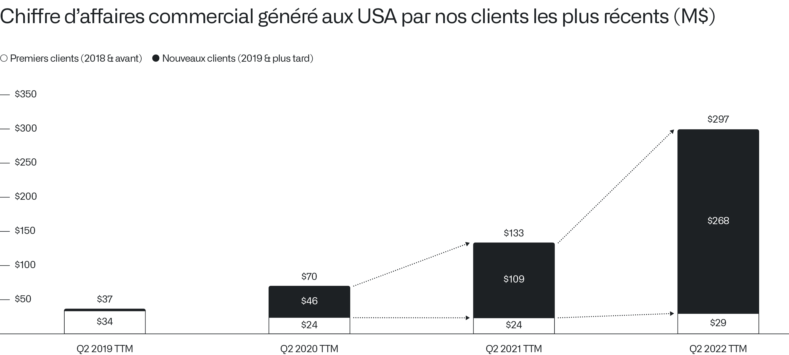
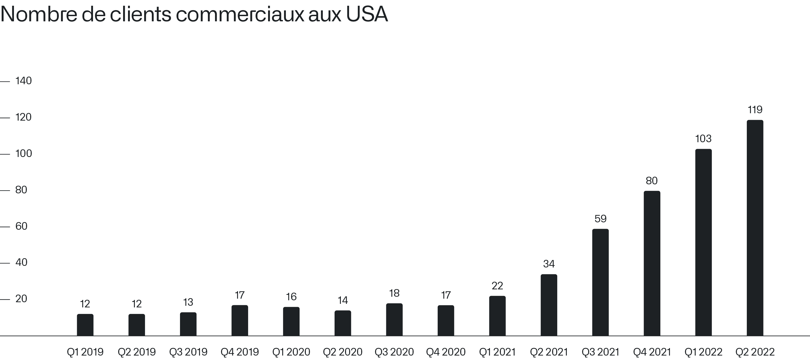
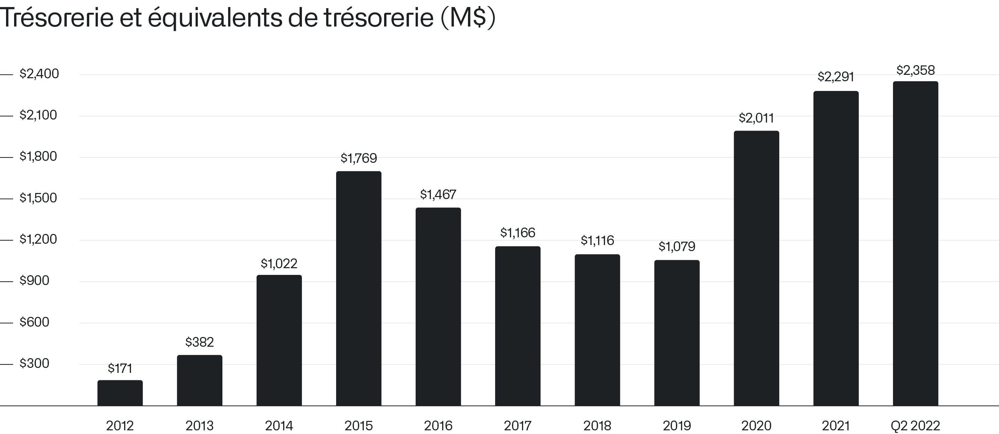
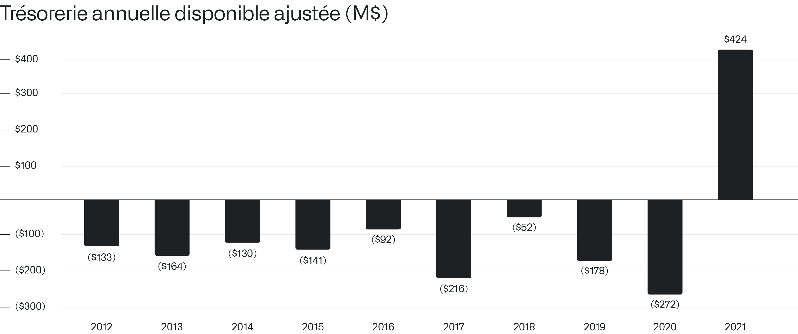

致股东信
2022年8月8日
I.
一家新企业在我们所构建的实体中悄然崛起。
仅我们在美国的业务，在截至今年第二季度的十二个月期间就创造了 10.4 亿美元的收入，与前十二个月相比增长了 42%。

我们在与美国客户接触时展现出的实力与活力，印证了我们的软件平台日臻完善与成熟。我们相信，这将推动这些平台在各行各业得到更广泛的采用。
我们发现，美国的企业和政府机构在采用新技术方面走在前列。
在尝试新软件平台、为组织的长期成功与韧性进行投资方面，美国机构展现出的意愿无出其右。
我们在美国市场的季度收入凸显了近年来业务持续且显著的增长。

重心正向美国发生重大转移，甚至可以说是一种回归。
我们在美国市场创造的收入占全球总收入的比例已大幅提升。
例如，在 2019 年第一季度，1.46 亿美元的总收入中有 5500 万美元（即 38%）来自美国客户。
然而三年后，到了 2022 年第二季度，我们在美国市场的收入占比已达到 61%：本季度 4.73 亿美元的收入中，有 2.9 亿美元来自美国，涵盖了商业客户、国防、情报以及其他政府组织。

我们预计，来自美国客户的收入占比将继续增长，即便我们在欧洲及其他国际市场的增速也在不断加快。
II.
我们坚信，最显著的增长仍在后头。
开发当前版本的核心软件平台，经历了漫长且往往十分激烈的迭代过程。我们在早期客户（包括商业和政府领域）中不断打磨，以最佳方式满足他们的需求。
直到最近，我们才开始从这些更加精炼、已转化为产品的软件平台中捕获价值，我们认为这一过程将进一步加速。
在截至 2022 年 6 月 30 日的十二个月期间，例如，自 2019 年以来获取的客户所创造的收入，几乎与我们此前获取的所有客户创造的总收入相当。

在截至 2020 年 6 月 30 日的十二个月期间，我们创造了 9.01 亿美元的总收入，其中 1.05 亿美元来自自 2019 年 1 月 1 日起获取的新客户，7.96 亿美元来自此前获取的客户。
（此处分析聚焦于近年来新业务伴随持续获取新客户而实现的累计增长，分析基于截至本财年第二季度的十二个月滚动期间 (TTM)，以提供完整的十二个月收入数据，并涵盖至最新公布的财务业绩。）
一年后，在截至 2021 年 6 月 30 日的十二个月期间，我们最新的一批客户——即自 2019 年 1 月 1 日起获取的客户——创造了 4.15 亿美元的收入，而老客户创造了 9.13 亿美元的收入。
最近，在截至 2022 年 6 月 30 日的十二个月滚动期间，这批新客户创造了 8.02 亿美元的收入，占该期间总收入的 46%。
经过多年的投资，一家高速增长的新型软件企业正在崛起。
III.
如果观察美国商业领域对我们软件日益增长的采用情况，这一趋势更加明显。

在截至 2022 年 6 月 30 日的十二个月期间，我们在美国的商业业务创造了 2.97 亿美元的收入。在这 2.97 亿美元中，有 2.68 亿美元（即 90%）来自自 2019 年 1 月 1 日起获取的客户。其余 2900 万美元来自此前获取的客户。
我们还发现，一些老客户——其中包括运输、银行和零售领域的一些最大型企业——在经历了多次尝试不同的数据集成与分析平台及方案后，正成群结队地回归我们的平台。
这些客户之所以回归，是因为他们尝试了其他选项，而这些替代方案都失败了。是产品让他们回归的。

对于大型商业企业和政府机构而言，当今可用的大多数企业软件平台几乎无法带来投资回报，甚至根本没有回报。
这些组织在数据集成项目上投入的数十亿美元，产生的结果远未达到变革性的效果。
IV.
我们的软件产品和平台正处于全球众多事件的中心，包括向数百万人分发疫苗，以及在欧洲东部肆虐的战争。
Apollo 也已转型为一项独立的产品，它将成为商业和政府市场的关键所在。
我们相信，大型企业对于交付和维护不依赖于底层实施平台的软件解决方案的需求，将与其对数据集成和分析的底层需求一样重要。
虽然我们的短期目标仍是让我们的核心软件平台触达更广泛的市场份额，但我们也在积极识别内置于这些平台中的其他组件和产品，它们本身具有独立的商业潜力。
我们的平台由 700 多个组件和 65 个不同的应用程序组成，其中包括 Gaia（我们面向军事合作伙伴的协作地图应用程序），以及 Scenarios（我们为模拟企业和大型组织内不同运营条件而创建的建模工具）。
这些组件中的每一个，本身都具有成为主导性独立软件产品的潜力。
V.
我们正在打造一家纯粹的软件企业，其深度和广度将随着时间的推移不断显现，而我们始终专注于长远发展。

截至上季度末，我们拥有 24 亿美元的银行存款，且无任何债务。这种财务状况使我们能够继续确保有能力开发真正前沿的软件平台，无论整体市场如何波动以及宏观经济条件如何变化。
我们的资产负债表现在更加稳固，因为我们的业务每年都能产生数亿美元的额外调整后现金流。
经过十多年的投资，我们在 2021 年产生了 4.24 亿美元的调整后自由现金流。

当其他公司在消耗资本时，我们始终坚持增加和保护资本。
我们在这一方面的战略为我们提供了可观的自由，使我们能够继续完善和发展我们的软件平台，从而将它们对客户的长期价值最大化。
VI.
我们正致力于这样一个未来：在美国及其海外盟国，所有大型机构都将在 Palantir 上运行其相当一部分（甚至全部）的运营业务。
大多数其他公司只瞄准微小的市场份额。
我们打算拿下全部。

诚挚地，

Alexander C. Karp
首席执行官兼联合创始人
Palantir Technologies Inc.
附加定义
在上述表格中，首客户或新客户（视情况而定）是指 Palantir 在适用的十二个月滚动期间内首次产生收入，并被归入相应客户类别的客户。在某些情况下，一个客户可以同时被视为首客户和新客户（例如，当与某客户的关系以及所有产生收入的合同在首客户类别内的某个十二个月滚动期间结束后终止，随后至少四个季度后在 新客户类别中开始新的产生收入的合同，且在此期间未从该客户处产生任何收入）。
前瞻性声明
本信件包含符合 1995 年《私人证券诉讼改革法案》“安全港”条款定义的“前瞻性声明”，包括但不限于关于我们的财务前景、产品开发、分销和定价、软件平台的预期效益和应用、业务战略和计划（包括与销售和营销工作、销售团队、合作伙伴和客户相关的战略和计划）、业务投资、市场趋势和市场规模、机遇（包括增长机遇）、我们对近期和潜在投资及与各实体商业合同的期望、我们对宏观经济事件的预期以及定位的声明。这些前瞻性声明自首次发布之日起作出，基于当时的预期、估计、预测以及管理层的信念和假设。诸如“指引”、“预期”、“预计”、“应该”、“相信”、“希望”、“目标”、“项目”、“计划”、“目标”、“估计”、“潜在”、“预测”、“可能”、“将”、“也许”、“可以”、“打算”、“应”以及这些术语的变体或否定形式和类似表述，均旨在识别这些前瞻性声明。前瞻性声明受众多风险和不确定性的影响，其中许多涉及超出我们控制范围的因素或情况。由于众多因素，我们的实际结果可能与前瞻性声明中所述或暗示的结果存在重大差异，这些因素包括但不限于我们向美国证券交易委员会（“SEC”）提交文件中详述的风险，包括我们截至 2021 年 12 月 31 日财年的 10-K 表年度报告以及我们可能不时向 SEC 提交的其他文件和报告，包括提供我们截至 2022 年 6 月 30 日财季收益新闻稿的 8-K 表当前报告，以及我们截至 2022 年 6 月 30 日财季的 10-Q 表季度报告。特别是，以下因素（除其他因素外）可能导致我们的结果与这些前瞻性声明所表达或暗示的结果存在重大差异：我们成功执行业务和增长战略的能力；我们的现金及现金等价物是否足以满足流动性需求；市场对我们平台的总体需求；我们增加新客户数量及从客户处产生收入的能力；我们能否将客户合同的部分或全部合同价值确认为收入，包括客户可用的任何合同选择权或受便利终止条款约束的合同期；我们漫长且不可预测的销售周期；我们成功发展直销团队并成功与第三方执行渠道销售及其他战略计划的能力；我们保留和扩大客户群的能力；我们的运营结果和关键业务指标在未来各季度的波动；我们业务的季节性；我们平台的实施过程可能复杂且漫长；我们成功开发和部署新技术以满足现有或潜在客户需求的能力；我们使平台更易于安装和使用的能力；我们维护和提升品牌和声誉的能力；随着业务增长我们维护和提升企业文化的能力；关于我们的新闻或社交媒体报道，包括但不限于呈现或依赖不准确、误导、不完整或其他破坏性信息的报道；近期或未来的全球宏观经济和地缘政治事件（如俄罗斯入侵乌克兰、外币波动或美国及其他国家通胀或利率上升）对我们公司或现有或潜在客户和合作伙伴的业务和运营的影响；以及任何对客户或第三方数据的 breach 或 access。
本信件中包含的前瞻性声明代表我们在本信件发布之日的观点。我们预计后续事件和发展将导致我们的观点发生变化。我们不承担任何更新或修订任何前瞻性声明的意图或义务，无论是由于新信息、未来事件还是其他原因。这些前瞻性声明
不应被视为代表我们在本信件日期之后任何日期的观点。过往业绩并不必然代表未来表现。
其他说明
本信件可能包含基于独立行业出版物或其他公开信息，以及基于我们内部来源的其他信息的统计数据、估计、预测和声明。这些信息涉及许多假设和限制，特此提醒您不要对这些估计赋予不当权重。我们未独立验证这些行业出版物和其他公开信息中包含的数据的准确性或完整性。因此，我们不就这些数据的准确性或完整性作出任何陈述，也不承担在本信件发布日期后更新此类数据的义务。
本信件在讨论我们的业务时可能提及各种增长率。除非另有说明，这些比率反映的是同比比较。
收到本信件即表示，您承认您将全权负责对市场及我们的市场地位进行评估，并将自行进行分析，且全权负责对所提供的信息形成自己的看法，包括关于我们业务潜在未来表现的信息。